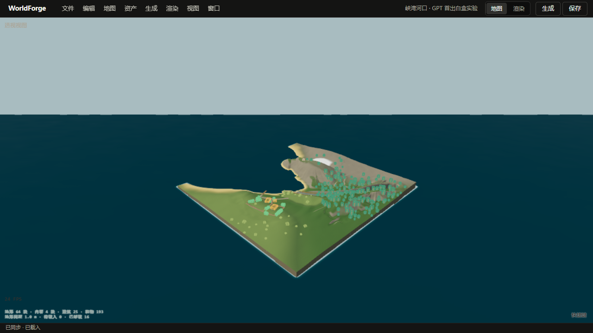
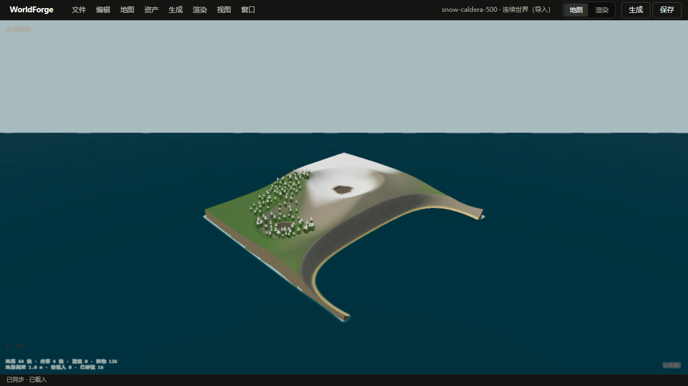
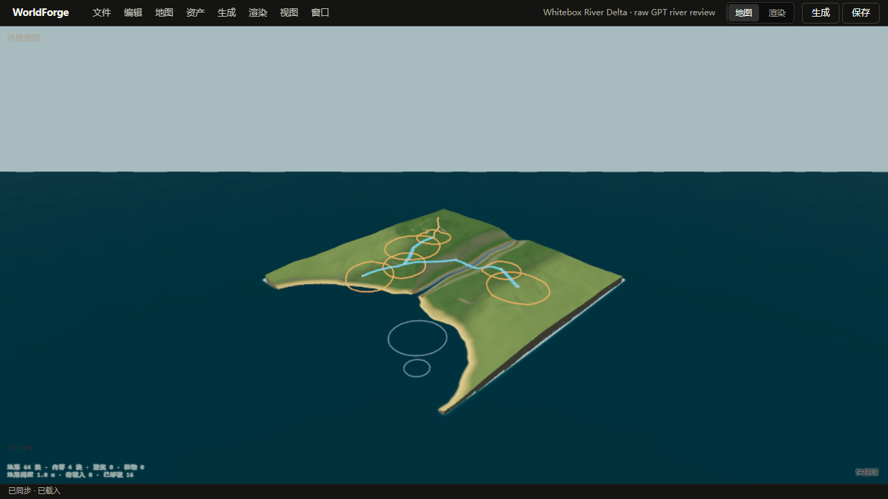
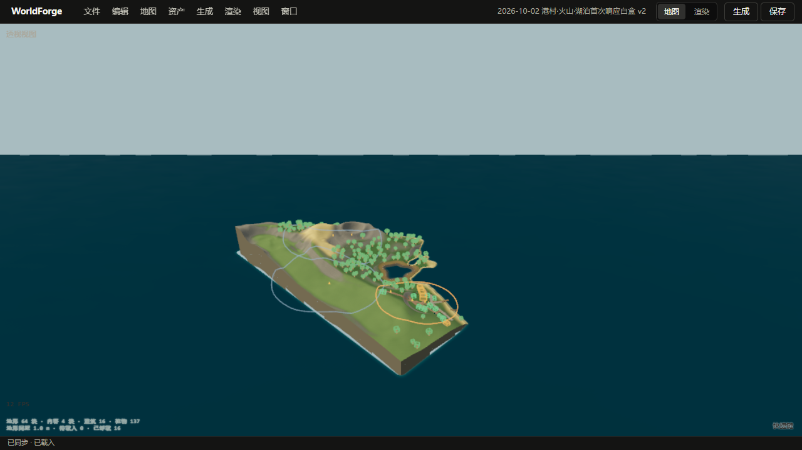
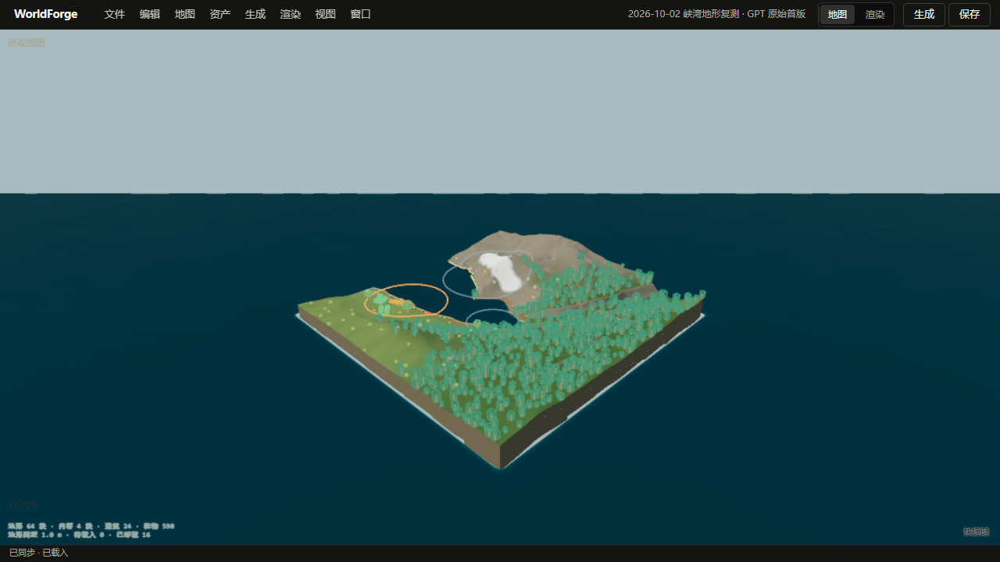
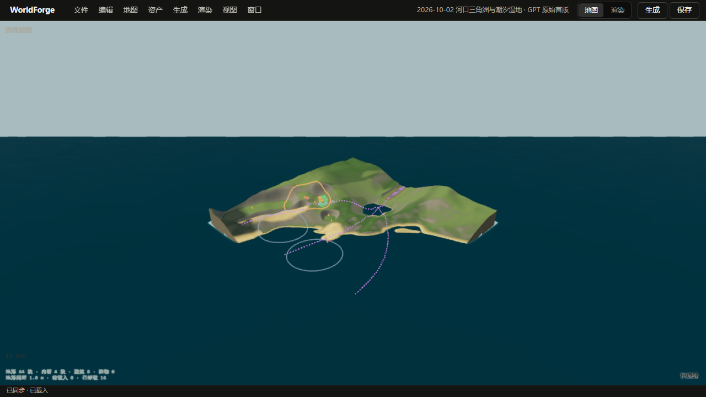

以下截图均来自 WorldForge 原版编辑器，等待 64 块地形全部加载、待载入归零后拍摄。切换四个固定斜角便于比较；点击“在页内旋转”会按需载入一个原版编辑器，切换案例时仍只保留这一个实时视图。截图保留了 AI 首版地形，没有为单个样例重雕。
旧测试地图 · 地形 64 块 / 待载入 0 · 打开原版地图
未达标：海水入口与河流有区分，但整体是一片低缓地形加孤立山包，缺少峡湾应有的高陡谷壁与宽谷底。东北角和西北角也能看到地图外缘的有限边界切面。

旧测试地图 · 地形 64 块 / 待载入 0 · 打开原版地图
火山口和雪坡可辨认。四个方向的地表连续，没有加载空洞；靠近世界边界时仍能看到明显的直切外缘。

旧测试地图 · 地形 64 块 / 待载入 0 · 打开原版地图
河谷到海口的方向清楚，但河面在远视角仍像亮色带，岸坡和滩地的体积感弱；外缘也有直切面。

旧测试地图 · 地形 64 块 / 待载入 0 · 打开原版地图
火山口、林地与岸线能辨认，背面也没有地形网格消失；岛体仍显得小，港口城镇和岸线的关系需要单独继续审查。

GPT 首轮规划 · 地形 64 块 / 待载入 0 · 建筑 24 / 植物 590 · 打开原版地图
北侧高地、雪线和深水入口已经可辨认，四向检查没有发现整片蓝色缺面。南侧仍像一块平坦平台，港湾与山壁之间的尺度关系偏弱；海平面与地形厚度交界还有一条亮色细线。植物白盒标记过密，遮住了部分地貌。

GPT 首轮规划 · 地形 64 块 / 待载入 0 · 建筑 8 / 植物 0 · 打开原版地图
未达标：绝对高度笔刷把低平三角洲切成陡峭干沟，几条河流因高程不连贯被截短或省略；渔村远离可靠海岸，只有 8 栋建筑且没有植被。此图保留原始首轮结果。曾试过强行保留完整实体河道，产生更深的黑色沟槽，已撤回该渲染行为。

归档起点为 2026-09-30 00:00 HKT。下列 47 张地图与上方 6 张四向卡片合计 53 张，bundle 均已能被原版编辑器读取；这只表示结构落地，不表示审美达标。“审美未验收”也不代表通过。点击“在页内旋转”会复用页首唯一的实时视图。
本轮十种地貌中的峡湾和三角洲在上方四向卡片里，其余八张在下方。它们都是当次付费规划和白盒的原始结果，本轮没有调用 DeepSeek 生成资产；后续通用流程改动不会回填旧图。目前十张均未达到完整的视觉与游玩验收标准。